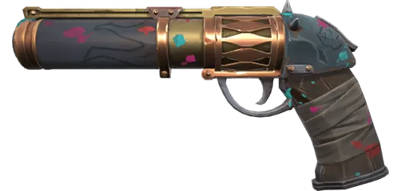
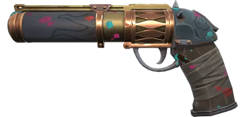

| Armas | Nome | Skin |
|---|---|---|
| Armas leves | Spectrum Classic |  |
| Armas leves | Gaia Ghost |  |
| Armas leves | Arcane Sheriff |  |
Essas são as armas que eu geralmente uso nos primeiros rounds, ou quando o time está fazendo eco.
Clique na arma para melhor experiência.
| Armas | Nome | Skin |
|---|---|---|
| Armas leves | Spectrum Classic | |
| Armas leves | Gaia Ghost | |
| Armas leves | Arcane Sheriff |  |